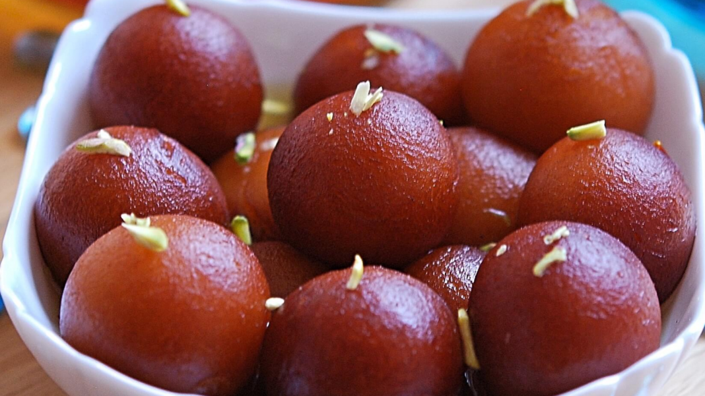

Gulab Jamun

Description
One of India's most cherished festival desserts, gulab jamun. These fried dumplings are scented with cardamom and steeped in rose and saffron syrup.
Ingredients
For the syrup
- 4 green cardamom pods, lightly squashed with the side of a knife.
- 600g golden caster sugar.
- A few drops rosewater.
- ¼ teastpoon of saffron strands, soaked in 2 tablespoons of warm water for 1 hr.
- 2 teastpoons of chopped pistachios.
For the Gulab Jamun
- 6 green cardamom pods, seeds removed.
- 1 teaspoon of golden caster sugar.
- 100g full-cream milk powder.
- 40g plain flour.
- ½ teaspoon baking powder.
- 50g of ghe or softened unsalted butter plus 1kg ghee, for frying.
- 1 tablespoon of natural yogurt.
- Aqueeze of lemon juice.
- 4-5 tablespoons whole milk.
- Sunflower oil
Preparation
- To make the syrup, gently heat the cardamom, sugar and 500ml water in a saucepan. Don't let the water boil before the sugar has dissolved. Simmer for 10 mins, then cool.
- Gradually add the rosewater, saffron and a little of its soaking liquid until you have a subtly flavoured syrup. Set aside.
- To make the gulab jamun, use a pestle and mortar to grind together the cardamom and sugar until fine.
- Sieve the milk powder, flour and baking powder into a mixing bowl and stir in the cardamom and sugar mixture. Rub in the 50g ghee or butter using your fingertips until the mixture resembles coarse crumbs.
- Add the yogurt, lemon juice and enough milk to form a soft dough, taking care not to overwork the mixture.
- Oil your hands with a little sunflower oil and shape small portions of the dough into walnut-sized balls, about 3cm in diameter and 20g each. Make sure the dumplings are smooth and have no cracks or folds.
- Reheat the syrup until it comes to the boil, then turn off the heat and cover with a lid.
- Heat the 1kg ghee in a wok or karahi to 130C or until a small piece of dough dropped in turns golden in 40 seconds. Fry the balls, in batches, over a medium heat for 5-7 mins, moving them around until they are an even, deep brown. Remove from the saucepan using a slotted spoon, then drain on kitchen paper. Add to the warm syrup, leaving them to soak for 2-3 hrs or preferably overnight.
- When ready to eat, warm the gulab jamun through in a wide saucepan, spooning over the syrup. Serve piping hot with the pistachios scattered over.
Back to main